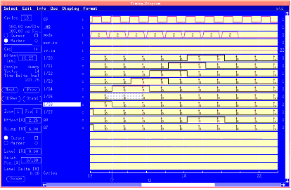
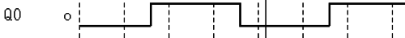
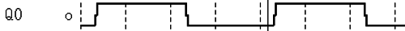

High resolution mode of the Timing Diagram
A high resolution mode allows you to strobe selected cycles in your test to find out when the output transitions of the DUT actually occur. And using the Timing Diagram cursor, you can make timing measurements on all the signal edges that are displayed in the window.
The high resolution mode takes up to 600 samples of the output waveforms which are shown in the Timing Diagram window. This gives you a scaled diagram showing what is really happening - so you can even see if glitches and spikes are present at the DUT outputs.
Nominal strobe points are displayed at each period.
See an example of a Timing Diagram in high resolution mode below.

See an example of an output waveform viewed with normal resolution in the figure below. The second figure shows the same waveform viewed in high resolution. Note how much more detailed the high resolution waveform appears.


There are two ways you can use high resolution mode:
- Use high resolution mode for performing a ‘One-Shot' diagram which captures only the cycles in the display:
- Use high resolution mode for scrolling through your test examining more cycles than can fit in your display at once:
Multiresult Timing Diagram
Instead of just performing a functional ‘go/no-go' type test, the high resolution mode samples the output waveforms by linking together several functional tests in immediate succession. Thus stepping the compare edge through the period to determine exactly when the DUT output signal crosses the two level thresholds that you have set for that output pin.
The result of the high resolution timing diagrams are: 0,1,I (Intermediate) and U (Unstable).
If your test has a very long list of vectors to execute, you may have to wait a few seconds for the high resolution diagram to appear after you click High Res.
- Resolution depends on the display size
A high resolution diagram in the Standard sized window uses 400 samples of the waveforms in the Timing diagram window, and in the Double sized window it uses 600 samples.
- Resolution depends on the number of cycles:
The greater the number of cycles you are viewing in the window at the same time, the fewer the number of samples taken for each cycle.
So, the greatest timing resolution you can get is for a single cycle being displayed in the double sized window. In this case, the Timing Diagram makes 600 samples of this one cycle. The poorest resolution is for 100 cycles being displayed in the Standard sized display - which takes only 4 samples of each cycle.
Functional changes
- Introduced before SmarTest 6.3.2